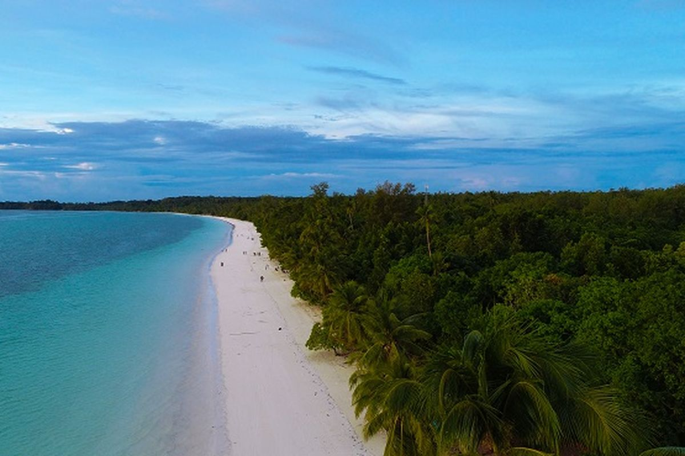
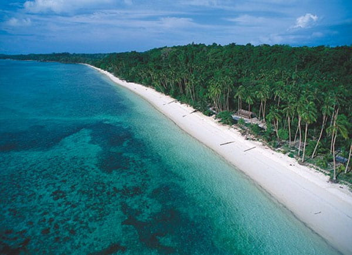
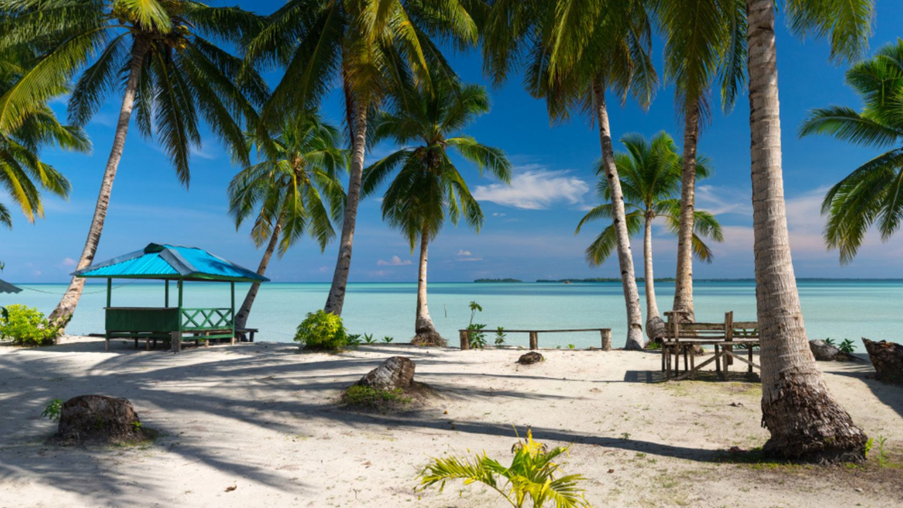

Informasi Utama
Pantai Ngurbloat yang terletak di Desa Ngilngof, Pulau Kei Kecil, Maluku Tenggara, terkenal secara global karena memiliki pasir putih terhalus di dunia dengan tekstur yang selembut tepung. Pantai ini juga populer dengan nama Pantai Pasir Panjang karena hamparan pasirnya membentang luas sepanjang kurang lebih 3 kilometer. Selain keunikan pasirnya, destinasi ini menawarkan panorama alam yang memukau dengan air laut jernih bergradasi biru-hijau serta ombak yang tenang, menjadikannya tempat yang sangat aman dan nyaman untuk berenang maupun bersantai.
Galeri



Daftar Aktivitas
- Bermain Pasir Halus
- Berjalan atau Berlari Santai
- Berfoto (Selfie/Photoshoot)
- Berenang
- Snorkeling dan Diving
- Bermain Voli atau Sepak Bola Pantai
- Bersantai di Gazebo
- Wisata Kuliner Lokal
Informasi Lokasi
Alamat : Ohoi (Desa) Ngilngof, Kecamatan Manyeuw, Kabupaten Maluku Tenggara, Provinsi Maluku, Kepulauan Kei
Jam Operasional : Buka setiap hari 24 jam
Tabel Harga Fasilitas
| Kategori | Harga |
|---|---|
| Tiket Masuk Motor | Rp.10.000/Motor |
| Tiket Masuk Mobil | Rp.15.000/Mobil |
| Tiket Masuk Bus | Rp.20.000/Bus |
| Gazebo 3x3 | Rp.25.000 |